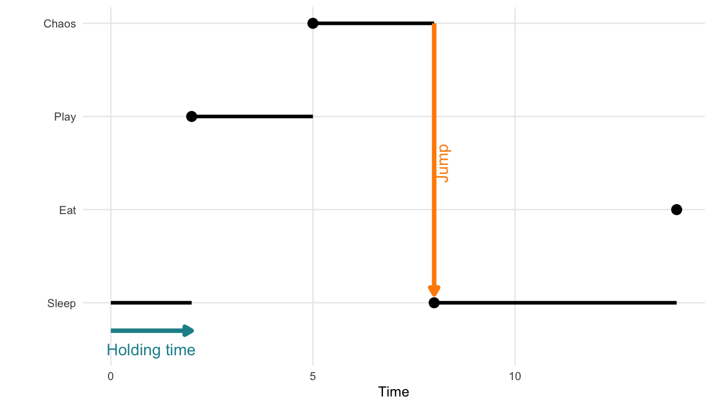
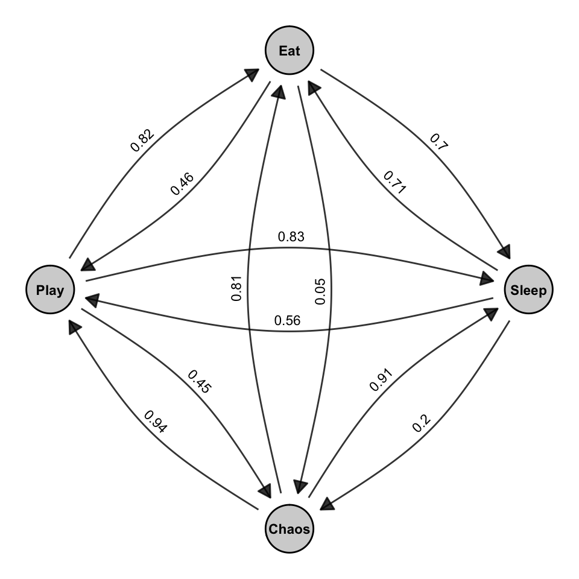

library(RSiena)18 Stochastic Actor Oriented Models (SAOMs)
Up to this point, we have focused on modeling social networks as cross-sectional data, that is, as static snapshots of tie patterns observed at a single point in time. Models such as Erdős–Rényi, preferential attachment, and Exponential Random Graph Models (ERGMs) allow us to account for structural dependencies, attribute effects, and network complexity within such static networks.
However, social networks are inherently dynamic. Ties are not fixed; they emerge, dissolve, and evolve through time as a result of decisions made by individual actors. Treating network data as static ignores this core aspect of social life. A more realistic modeling approach must account for the sequential, actor-driven nature of network evolution.
This brings us to Stochastic Actor-Oriented Models (SAOMs), a class of models explicitly designed for longitudinal network data. Unlike cross-sectional models that treat the network as a single outcome, SAOMs treat the network as a continuous-time stochastic process driven by individual actor decisions. In this framework, changes to the network occur one tie at a time, reflecting micro-level decisions made by actors based on preferences, opportunities, and constraints.
SAOMs are particularly well-suited for panel data, i.e., multiple observations of the same network over time where both tie structures and actor attributes may co-evolve. This allows researchers to address questions such as:
- How often do actors initiate or terminate ties?
- Do actors prefer to form ties based on similarity (selection) or become more similar after forming ties (influence)?
- How do structural tendencies like reciprocity or transitivity manifest through sequential decision-making?
- Can we simulate or predict how the network may evolve in future time points?
SAOMs are one of two main frameworks for dynamic network modeling. The other is the Temporal Exponential Random Graph Model (TERGM). While TERGMs extend ERGMs to panel data by conditioning on past networks, SAOMs take a process-based view that explicitly models how ties change over time due to actor decisions.
Table 18.1 shows the core differences between ERGMs. While ERGMs model the global structure of a network at a single point in time, SAOMs treat network evolution as a dynamic process driven by actors making sequential decisions. In othr words, SAOMs extend the logic of ERGMs into the temporal domain, capturing the mechanisms of change rather than just the final structure.
| ERGMs | SAOMs | |
|---|---|---|
| Data type | Cross-sectional (static snapshot) | Longitudinal (panel data, repeated observations) |
| Unit of analysis | The entire network | Individual actor decisions |
| Modeling approach | Statistical dependence among ties | Actor-based tie change process |
| Time modeling | No time dimension | Continuous-time change process |
| Common mechanisms | Reciprocity, transitivity, nodal covariates | Same, but expressed as actor preferences over changes |
| Estimation method | MCMC Maximum Likelihood (MCMCMLE) | Simulation-based Method of Moments (MoM) |
| Outcome | Probability of the observed network | Simulated network trajectories over time |
| In R | ergm (or statnet) |
RSiena |
In what follows, we focus on the SAOM framework, its components, estimation process, and how it can be used to explain and simulate network evolution.
18.1 Packages Needed for this Chapter
18.2 Modeling Network Evolution
Most real-world social networks are dynamic systems. Relationships between individuals form, dissolve, and evolve as a result of ongoing social interactions, personal decisions, and contextual factors. When we observe a single snapshot of a network, we can only speculate about the processes that produced it. By contrast, longitudinal network data, repeated observations of a network over time, allow us to move from static description to dynamic explanation.
Longitudinal network data consist of a set of actors \(N = \{1, 2, \dots, n\}\) and a series of observed adjacency matrices: \[ x(t_0),\ x(t_1),\ \dots,\ x(t_M) \] where each matrix captures the presence or absence of ties between actors at a particular time point.
These repeated measures make it possible to ask and answer key questions:
- How frequently do actors change their ties?
- What drives the formation, maintenance, or dissolution of ties?
- How do individual attributes (e.g., gender, age, group membership) shape network dynamics?
- Can we predict how the network will evolve in the future?
- How do both endogenous (network-based) and exogenous (attribute-based) factors jointly shape the network?
Moreover, understanding why networks change requires distinguishing between competing explanations. For instance, if we observe that two similar actors are connected at time \(t_1\), this might reflect selection (they formed a tie because of their similarity) or influence (they became similar after forming a tie). Only a longitudinal framework allows us to tease apart these mechanisms.
Time also matters for structural tendencies. Consider transitivity: when we observe a triadic closure (i.e., if \(i\) is tied to \(j\) and \(j\) to \(h\), then \(i\) may become tied to \(h\)), we cannot know whether it reflects an intentional closure or merely a residual pattern without knowing the order in which ties appeared.
Stochastic Actor-Oriented Models (SAOMs) offer a solution by treating network change as a continuous-time, actor-driven process. In this framework:
- The network evolves through a sequence of micro-steps where individual actors have opportunities to change their outgoing ties.
- Each actor evaluates the current network and makes decisions based on preferences (e.g., for reciprocation, closure, or similarity).
- The model simulates the timing and direction of these changes between observation moments (waves).
This actor-oriented perspective aligns closely with how ties form in real life: individuals decide whom to connect with (or disconnect from), guided by structural cues and attribute-based tendencies.
In the next section, we will formalize this logic, introduce the core components of SAOMs, and show how the RSiena package implements these models for empirical analysis.
18.3 Stochastic Processes and Continuous-Time Markov Chains
To understand the dynamics of network evolution in Stochastic Actor-Oriented Models (SAOMs), it is helpful to first grasp the concept of a stochastic process; a collection of random variables indexed by time:
\[ \{ X(t), t \in T \} \] where:
- \(T\) is the index set (typically representing time),
- \(S\) is the state space, the set of all possible values that \(X(t)\) can take.
A particular type of stochastic process relevant to SAOMs is the continuous-time Markov chain (CTMC). A CTMC is defined by:
- A finite state space \(S\) (e.g., actor states or network configurations),
- A continuous time domain \(t \in [0, \infty)\),
- The Markov property: the future state depends only on the present state, not the past: \[ P(X(t_j) = x_j \mid X(t) = x(t), \, \forall t \leq t_i) = P(X(t_j) = x_j \mid X(t_i) = x_i) \] This memoryless property allows us to model tie changes or actor decisions that depend only on the current configuration.
The CTMC evolves through a sequence of randomly timed transitions. Each state is held for a random duration, and transitions to the next state are governed by probability. More formally, a CTMC is characterized by:
- When a change occurs — governed by the holding time, typically modeled with an exponential distribution.
- What the next state is — determined by the jump matrix, which specifies the transition probabilities between states.
Together, holding time and jump probabilities define the full behavior of the CTMC.
Example: A Cat’s Daily Activities
To bring the concept of a continuous-time Markov chain (CTMC) to life (or to all nine lives of our cat) consider a model of a house cat’s daily activities. At any given moment, the cat is in one of the following behavioral states:
- \(0\): Sleeping
- \(1\): Eating
- \(2\): Playing
- \(3\): Plotting chaos (e.g., knocking things off shelves)
We define \(X(t)\) as the cat’s current activity at time \(t\). The process \(\{X(t), t \geq 0\}\) satisfies:
- A finite state space \(S = \{0, 1, 2, 3\}\)
- Continuous transitions over time
- The Markov property: next state depends only on the current state
The cat transitions between states at random times. Each stay in a state lasts for a random holding time, and transitions to the next state occur probabilistically based on a jump matrix.
The holding time \(T_i\) in state \(i\) is modeled using an exponential distribution: \[ f_{T_i}(t) = \lambda_i e^{-\lambda_i t}, \quad t > 0 \]
- \(\lambda_i\) is the rate of leaving state \(i\).
- \(\mathbb{E}[T_i] = \frac{1}{\lambda_i}\) is the expected duration in state \(i\).
The exponential distribution’s memoryless property means that the probability of remaining in a state is independent of how long the cat has already been in it: \[ P(T_i > s + t \mid T_i > t) = P(T_i > s) \] So, even after two hours of napping, the chance that the cat naps another 30 minutes is the same as if it had just started.
Once the holding time ends, the cat jumps to a new state. The transition matrix \(P = (p_{ij})\) governs this: \[ p_{ij} = P(X(t') = j \mid X(t) = i) \] For each state \(i\), the row of probabilities \(p_{ij}\) must sum to 1: \[ \sum_{j \in S} p_{ij} = 1 \]
Figure 18.1 illustrates a single realization of such a process. This visual shows how a process starting in state 0 might stay there for some time, then jump to state 2, then state 3, and so on, with irregular intervals between jumps.

Below is a hypothetical transition matrix \(P\) for the cat’s behavioral states. Each row corresponds to the current state, and each column to the next state:
| Sleep | Eat | Play | Chaos | |
|---|---|---|---|---|
| Sleep | 0.00 | 0.70 | 0.83 | 0.56 |
| Eat | 0.71 | 0.00 | 0.81 | 0.20 |
| Play | 0.05 | 0.82 | 0.00 | 0.45 |
| Chaos | 0.91 | 0.46 | 0.61 | 0.00 |
Note: Diagonal entries (e.g., Sleep → Sleep) are set to zero for interpretability. They can be included to model the probability of no state change.
Next, we can combine the states and transitions into a directed graph showing which states can be reached from one another, and with what likelihood. This is shown in Figure 18.2.

Figure 18.2 is a visual representation of this matrix. Each arrow in the graph corresponds to a non-zero entry \(p_{ij}\) in the matrix. The curved edges indicate transitions between pairs of states, and the labels on the arrows match the values in the matrix. Together, the matrix and the graph describe a jump chain over the set of behavioral states. These transitions are stochastic (i.e., random), and their dynamics unfold in continuous time, which is what differentiates CTMCs from discrete-time Markov models.
In summary, a Continuous-Time Markov Chain (CTMC):
- Determines how long the system remains in a state using the holding time, typically modeled as exponentially distributed.
- Uses a transition matrix (or jump matrix) to govern which state is entered next.
- Is memoryless and evolves in continuous time, meaning the future depends only on the present state and not the past.
These principles underpin Stochastic Actor-Oriented Models (SAOMs), where actors make sequential and probabilistic changes to their network ties or attributes, driven solely by the current network state.
18.4 Formal Definition of SAOMs as Continuous-Time Markov Chains
Stochastic Actor-Oriented Models (SAOMs), introduced by Snijders (1996), provide a principled framework for analyzing how social networks evolve over time. To formally define the model, we start by framing them as a type of continuous-time Markov chain (CTMC), operating on a network space.
As previously introduced, a Continuous-Time Markov Chain (CTMC) is characterized by three key components:
- A finite state space: For SAOMs, this space includes all possible directed networks (i.e., all adjacency matrices) that can be constructed from \(n\) actors.
- A continuous-time process: Network changes (such as the creation or dissolution of ties) occur at random, unpredictable points in time.
- The Markov property: The likelihood of a transition depends solely on the network’s current configuration, not on how it arrived there.
In the sections that follow, we explore how each of these components applies specifically to SAOMs.
18.4.1 State Space of Networks
Let \(X\) be the set of all possible adjacency matrices (i.e., network configurations) defined on \(n\) actors. Each matrix corresponds to a different possible state of the network. The size of this space is:
\[ |X| = 2^{n(n-1)} \]
This comes from the fact that each of the \(n(n-1)\) possible directed ties between distinct actors can independently be either present (1) or absent (0).
For instance, with a 4-node directed network shown in Figure 18.3, we can represent different adjacency matrices as the network evolves over time. We see a step-by-step representation of how a network evolves through successive tie changes, starting from an empty network and progressing toward a fully connected one.

18.4.2 Continuous-time process
Stochastic Actor-Oriented Models (SAOMs) are based on the assumption that social networks evolve as a continuous-time Markov process. This means the network changes gradually and randomly over time through small, actor-driven steps such as adding or removing ties.
However, in empirical studies, we rarely observe the full trajectory of these changes. Instead, we only see the network at a limited number of discrete observation moments (e.g., survey waves at \(t_1\), \(t_2\), \(\ldots\)). The actual tie changes (who added or dropped a connection and when) occur in the unobserved latent process between these time points.
This distinction is critical:
- Observed process: snapshots of the network at specific time points.
- Latent process: the underlying continuous sequence of micro-steps, where actors make sequential, stochastic decisions based on the current state of the network.
SAOMs aim to reconstruct and simulate this hidden evolution process, inferring the actor behaviors that most likely produced the observed transitions.
[image] network states evolve at \(t_0\), \(t_1\), …, but what we observe are discrete “snapshots” of this hidden continuous-time trajectory.
18.4.3 The Markov Property
A central assumption of Stochastic Actor-Oriented Models (SAOMs) is that the probability of moving to a new network state depends only on the current state, not on the path taken to get there. This is the Markov property and is formally defined as: \[ P(X(t_j) = x_j \mid X(t) = x(t), \, \forall t \leq t_i) = P(X(t_j) = x_j \mid X(t_i) = x_i) \] where \(X(t)\) denotes the state (i.e., network configuration) at time \(t\). In other words, the future evolution of the process depends solely on the present state \(x_i\) and not on the entire sequence of previous states. The model is memoryless: it “forgets” the past once the current state is known.
In the context of SAOMs, this means that when an actor is given the opportunity to make a change, such as forming or dissolving a tie, they do so based only on the present network structure and covariate information. There is no dependence on the path the network took to reach its current configuration.
This assumption significantly simplifies the modeling of network dynamics. It eliminates the need to track full network histories and allows for tractable simulation-based estimation. Conceptually, it also aligns with many social processes where actors respond to their current social environment rather than recalling a complete relational past.
Nonetheless, the Markov assumption is a modeling abstraction. While it facilitates analysis and interpretation, it may not capture certain behaviors where history matters such as long-term reciprocity, reputation building, or delayed responses. Still, for many applications, it offers a powerful and flexible framework for understanding how networks evolve over time.
18.4.4 Actor-Oriented Modeling Assumptions
A central challenge in modeling network dynamics is the vast number of possible future configurations. For a directed network with \(n\) actors, there are \(2^{n(n-1)}\) possible states—making exhaustive evaluation of all potential transitions computationally infeasible.
SAOMs address this by adopting an actor-driven approach. Instead of modeling global changes to the network, SAOMs assume that individual actors make decisions about their outgoing ties through a series of small, sequential updates. This simplifies the modeling process while remaining grounded in a realistic representation of social behavior.
The SAOM framework relies on three core assumptions:
One actor at a time: At each micro-step, a single actor is randomly selected and given the opportunity to revise their outgoing ties. This reflects individual, sequential decision-making.
One tie at a time: The selected actor may consider one outgoing tie—either forming it, dissolving it, or choosing to leave it unchanged. Only one tie can be changed per step, which keeps the space of possible transitions manageable.
Actor-controlled change: Each actor controls only their own outgoing ties. Tie changes arise solely from the actor’s individual evaluation of the network and are not the result of simultaneous or coordinated actions.
Together, these assumptions define a process of sequential micro-steps, each involving:
- Selecting an actor at random,
- Considering one possible tie change,
- And waiting a randomly determined time before the next opportunity arises.
This process unfolds in continuous time and follows the structure of a continuous-time Markov chain (CTMC). It consists of two key components: the holding time; which determines how long the current network state persists, and the jump chain; which defines the probability of transitioning to a new network state via a single tie change.
18.4.5 The Holding Time and The Jump Chain
The holding time is the waiting period before an actor is selected to potentially change a tie. In SAOMs, this waiting time is modeled as an exponentially distributed random variable, consistent with the properties of a continuous-time Markov chain (CTMC). For an actor \(i\), the probability density function for the holding time \(T_i\) is given by: \[ f_{T_i}(t) = \lambda_i e^{-\lambda_i t}, \quad \lambda_i > 0, \quad t > 0 \] Here, \(\lambda_i\) is the rate parameter, determining how quickly actor \(i\) is expected to receive opportunities to change their ties. The rate function controls the frequency of actor selection:
Homogeneous specification: All actors are equally likely to be selected, meaning: \[ \lambda_i = \lambda \quad \text{(for all } i \text{)} \] Under this assumption, each actor has equal probability of being selected at a given step: \[ P(i \text{ is selected}) = \frac{1}{n} \]
Heterogeneous specification: The rate may depend on actor attributes or the current network state:
\[ \lambda_i = \lambda_i(\theta, x, v) \]
where:
- \(\theta\) is a vector of parameters,
- \(x\) is the current network configuration,
- \(v\) are actor-level covariates.
The probability that actor \(i\) is selected becomes:
\[ P(i \text{ is selected}) = \frac{\lambda_i(\theta, x, v)}{\sum_{j=1}^{n} \lambda_j(\theta, x, v)} \]
This flexible specification allows different actors to have different speeds of change, depending on structural or covariate information.
The exponential distribution is memoryless: the probability that the actor will change in the next instant does not depend on how long they have already waited. That is:
\[ P(T_i > s + t \mid T_i > t) = P(T_i > s) \]
This means the process does not “remember” how long an actor has been inactive; a property that aligns naturally with the assumptions of continuous-time Markov models. So in summary, the holding time determines when the next micro-step occurs in the SAOM process. It is random, actor-specific (depending on \(\lambda_i\) for each actor \(i\)), and memoryless (due to the exponential distribution).
By controlling the duration between opportunities for change, the holding time governs the rhythm of the network evolution and is therefore a core component of the stochastic process underlying SAOMs.
The second key component of the model is the jump chain which governs which tie change (if any) an actor performs at a given micro-step. It models the probability of moving from the current network configuration to a new one by altering a single outgoing tie.
Let the current network state be \(x\). When actor \(i\) is selected, they evaluate a set of possible alternatives \(\{x^{(1)}, x^{(2)}, \dots, x^{(J)}\}\), each differing from \(x\) by one change to their own outgoing ties (add, drop, or maintain).
Each alternative \(x^{(j)}\) is assigned a utility: \[ U_{ij} = F_{ij} + \varepsilon_{ij} \]
- \(F_{ij}\) is the deterministic component based on evaluation functions (e.g., reciprocity, transitivity).
- \(\varepsilon_{ij}\) is a Gumbel-distributed error term introducing randomness into the actor’s decision.
This setup corresponds to a random utility model, where choices are probabilistic rather than deterministic.
The probability that actor \(i\) chooses alternative \(j\) is given by the multinomial logit formula: \[ p_{ij} = \frac{\exp(F_{ij})}{\sum_{h=1}^{J} \exp(F_{ih})} \] This expression defines the jump probabilities, or the likelihood of transitioning to a specific next state among the feasible one-tie modifications. This probabilistic rule implies a jump matrix \(P = (p_{ij})\), which defines the probabilities of transitioning from one state to another. But due to the one-actor-one-tie assumption, most entries in \(P\) are zero.
Only configurations reachable by one tie change are considered. This makes the transition matrix extremely sparse, keeping the model computationally feasible even with large \(n\).
Key features of SAOMs include:
- Directed, non-reflexive ties: SAOMs model directed relationships, such as friendship nominations, where actors cannot nominate themselves (no self-loops).
- Ties tend to persist: The models assume a degree of stability, i.e., ties formed in the past are likely to endure unless actors actively choose to dissolve them.
- Microsteps between observations: Although we observe networks only at discrete time points (e.g., waves in a panel study), SAOMs assume the underlying process evolves in continuous time, with actors making decisions one at a time in between observations.
- Actor agency: Each actor is assumed to make sequential and intentional decisions about adding, dropping, or maintaining ties based on an objective function that quantifies their preference over possible network configurations.
The process is driven by two main components:
- Rate function: Determines how often an actor gets the opportunity to make a network change.
- Objective function: Governs which network change the actor is likely to make, based on structural features (like reciprocity or transitivity) and covariates.
Formally, the SAOM framework assumes that actors act myopically: they evaluate the immediate consequences of a tie change and choose the one that increases (or is more likely to increase) their objective function. The model does not assume long-term strategic planning.
This actor-oriented perspective makes SAOMs particularly well-suited for modeling network dynamics in settings where individuals actively manage their ties, such as adolescent friendship networks, organizational communication, or online social platforms.
The SAOM thus builds directly on the ideas of continuous-time Markov chains, using them as a scaffold for representing the unfolding micro-dynamics of network change, with actor choice and agency at its core.